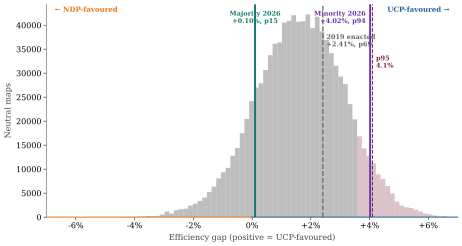

Alberta's commission produced two riding maps in 2026. This audit compared them — using the same tests, applied equally to both — to ask whether they treat voters the same way.
Official Elections Alberta maps — May 2026When you vote in Alberta, you vote in your riding — the geographic area you share with your MLA (Member of the Legislative Assembly). Every riding elects one person. The party that wins the most ridings runs the government. With 89 ridings total, you need 45 to be in charge.
To prevent the government from drawing its own lines (like letting one team write the rules of its own game), Alberta uses a commission — a group of five appointed people who are supposed to draw the lines fairly. In 2025-26, the commission split: three members produced one map, two members produced a different one. On April 16, 2026, the government rejected both and gave the job to a five-MLA committee, three of whom are from the governing United Conservative Party (UCP). The main opposition is the New Democratic Party (NDP).
You cannot just look at two maps and say which one is fair. Maps are complicated and your eye can be fooled. So this audit did two things.
First: it measured six specific properties of each map — things like whether riding sizes are equal and whether cities are cut up unnecessarily.
Second: a computer program drew 1 million random Alberta maps, all following the same rules the commission had to follow. Then it asked: where do the two commission maps land compared to all those random maps? Are they in the normal range, or are they unusual?

This concept is important, so here is a plain explanation before the numbers.
A vote is "wasted" if it did not affect the outcome. There are two ways that happens:
1. Your candidate loses. Your vote went to someone who didn't win. It didn't change anything.
2. Your candidate wins by a huge margin. Your candidate only needed, say, 5,001 votes out of 10,000 to win. If they got 8,000, those extra 2,999 votes did nothing — the win was already secured.
Riding lines can be drawn — on purpose or by accident — so one party's voters keep piling up in ridings they win by enormous margins, while the other party's voters win many close races. The party with the piled-up votes needs more total votes to win the same number of seats. Their votes are less efficient.
| Map | Extra wasted NDP votes vs UCP | As a share of all ballots |
|---|---|---|
| Majority map | ≈ 881 votes | 0.1% — nearly equal |
| Minority map | ≈ 36,000 votes | 4.0% — 41 times larger gap |
Every test was run the same way on both maps.
| What was measured | Majority map | Minority map | Who benefits |
|---|---|---|---|
| How unequal are riding sizes? (lower = fairer) | 3,180 people off average | 4,707 people off average — 48% worse | Reduces vote equality |
| How overpopulated is northwest Calgary? | +2.8% above average | +11.5% above average | UCP (NDP votes piled into fewer ridings) |
| How many pieces is the City of Airdrie cut into? | 2 pieces | 4 pieces, each attached to a different rural area | UCP (no single MLA accountable to Airdrie) |
| Do borders follow existing city and town limits? | 80% — normal | 72% — normal | Neither — both within the normal Canadian range |
| How many boundaries did the commission chair flag as unusual? | 0 | 3 | N/A |
| NDP seats at a perfectly tied (50-50) vote | 48 seats — in the normal range of random maps | 43 seats — fewer than 100 of 1 million random maps are this extreme | UCP (5-seat swing) |
| Wasted vote gap (extra wasted NDP votes vs UCP) | ≈ 881 votes (≈ 0.1% of ballots) | ≈ 36,000 votes (≈ 4.0% of ballots) | UCP (×41 larger gap) |
It does not say either map is illegal. The legal term "gerrymander" comes from American law, which Canada does not have. In Canada, the legal question is whether voters have "effective representation" under the Charter of Rights and Freedoms, and whether the commission followed the Electoral Boundaries Commission Act. Those are questions for courts and legislators — not this audit.
It does not say anyone cheated. Statistics show what a map does. They cannot show what the people who drew it intended. The same outcome can come from deliberate choices, from coincidence, or from Alberta's own geography.
I'm a student at Mount Royal University. I did this research on my own — it was not assigned as coursework and the university did not commission it. My views are my own and do not represent the university. I have no connection to Elections Alberta, the commission, or any political party.
I have supported parties on all sides of the political spectrum depending on the election. I'm telling you that because my political history could affect how I look at this issue. The main protection against that is the method: I tested both maps the same way, wrote down my predictions before looking at the results, and put everything online so anyone can check my work. I paid for this research myself.